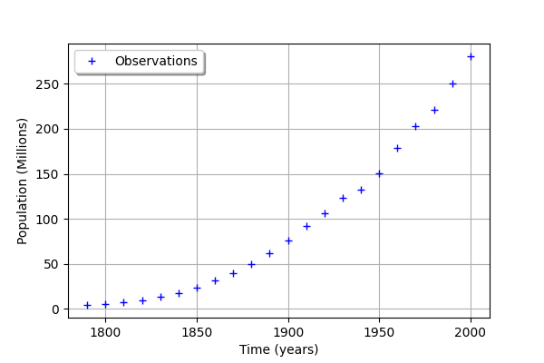
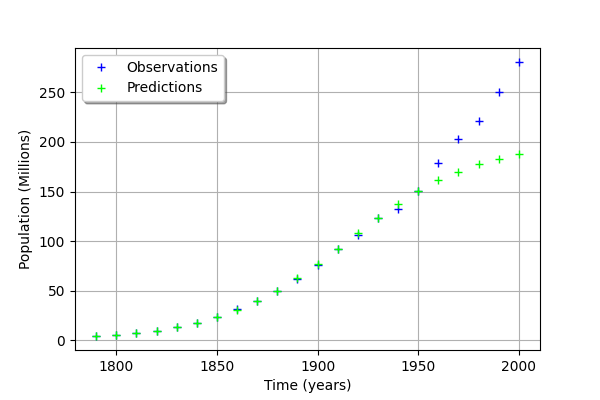
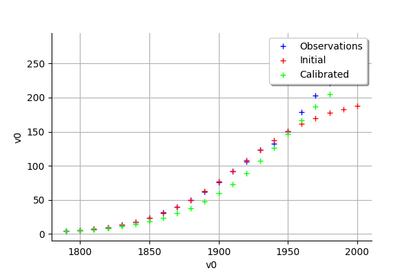
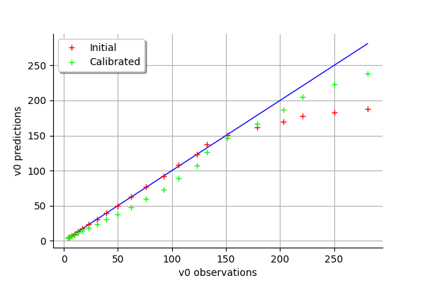
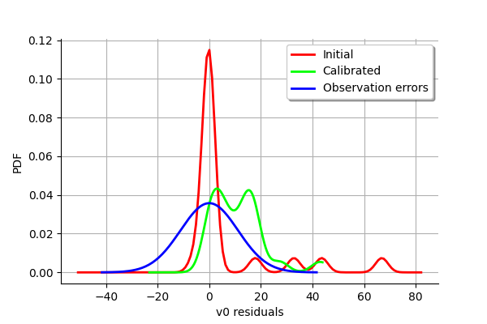
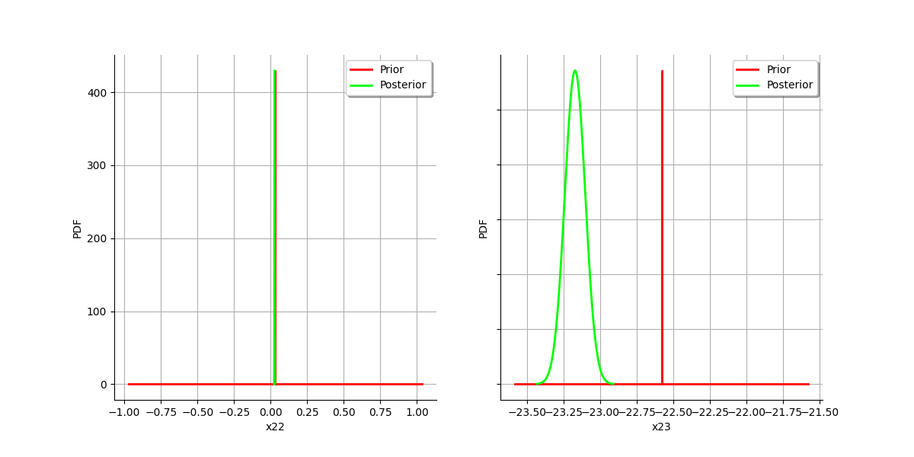

Calibration of the logistic model¶
Introduction¶
The logistic growth model is the differential equation:

for any , with the initial condition:
where
 and
and  are two real parameters,
are two real parameters, is the size of the population at time
is the size of the population at time  ,
,is the initial time,
is the initial population at time ,
 is the final time.
is the final time.
The  parameter sets the growth rate of the population. The
parameter sets the growth rate of the population. The  parameter acts as a competition parameter which limits the size of the population by increasing the competition between its members.
parameter acts as a competition parameter which limits the size of the population by increasing the competition between its members.
In [1], the author uses this model to simulate the growth of the U.S. population. To do this, the author uses the U.S. census data from 1790 to 1910. For this time interval, R. Pearl and L. Reed [2] computed the following values of the parameters:
Our goal is to use the logistic growth model in order to simulate the solution for a larger time interval, from 1790 to 2000:

Then we can compare the predictions of this model with the real evolution of the U.S. population.
We can prove that, if , then the limit population is:
In 1790, the U.S. population was 3.9 Millions inhabitants:
We can prove that the exact solution of the ordinary differential equation is:
for any .
We want to see the solution of the ordinary differential equation when uncertainties are taken into account in the parameters:
the initial U.S. population ,
the parameters
and .
Indeed, Pearl and Reed [2] estimated the parameters and using the U.S. census data from 1790 to 1910 while we have the data up to 2000. Moreover, the method used by Pearl and Reed to estimate the parameters could be improved; they only used 3 dates to estimate the parameters instead of using least squares, for example. Finally, Pearl and Reed did not provide confidence intervals for the parameters and .
Normalizing the data¶
The order of magnitude of and are very different. In order to mitigate this, we consider the parameter  as the logarithm of :
as the logarithm of :
This leads to the value:
The order of magnitude of the population is . This is why we consider the normalized population in millions:
for any .
Let be the initial population:
Uncertainties¶
Uncertainty can be accounted for by turning , and into independent random variables ,  and
and  with Gaussian distributions. From this point onward, , and respectively denote , and .
with Gaussian distributions. From this point onward, , and respectively denote , and .
Variable |
Distribution |
|---|---|
gaussian, mean , coefficient of variation 10% |
|
|
gaussian, mean |
|
gaussian, mean |
No particular probabilistic method was used to set these distributions. An improvement would be to use calibration methods to get a better quantification of these distributions. An improvement would be to use calibration methods to get a better quantification of these distributions.
Notes¶
This example is based on [1], chapter “First order differential equations”, page 28. The data used in [1] are from [3]. The logistic growth model was first suggested by Pierre François Verhulst near 1840. The data are from [1] for the time interval from 1790 to 1950, then from [2] for the time interval from 1960 to 2000.
Calibrating this model may require to take into account for the time dependency of the measures.
References¶
[1] Martin Braun. Differential equations and their applications, Fourth Edition. Texts in applied mathematics. Springer, 1993.
[2] Cleve Moler. Numerical Computing with Matlab. Society for Industrial Applied Mathematics, 2004.
[3] Raymond Pearl and Lowell Reed. On the rate of growth of the population of the united states since 1790 and its mathematical representation. Proceedings of the National Academy of Sciences, 1920.
Analysis of the data¶
[30]:
import openturns as ot
import numpy as np
The data is based on 22 dates from 1790 to 2000.
[31]:
observedSample=ot.Sample([\
[1790,3.9], \
[1800,5.3], \
[1810,7.2], \
[1820,9.6], \
[1830,13], \
[1840,17], \
[1850,23], \
[1860,31], \
[1870,39], \
[1880,50], \
[1890,62], \
[1900,76], \
[1910,92], \
[1920,106], \
[1930,123], \
[1940,132], \
[1950,151], \
[1960,179], \
[1970,203], \
[1980,221], \
[1990,250], \
[2000,281]])
[32]:
nbobs = observedSample.getSize()
nbobs
[32]:
22
[33]:
timeObservations = observedSample[:,0]
timeObservations[0:5]
[33]:
| v0 | |
|---|---|
| 0 | 1790 |
| 1 | 1800 |
| 2 | 1810 |
| 3 | 1820 |
| 4 | 1830 |
[34]:
populationObservations = observedSample[:,1]
populationObservations[0:5]
[34]:
| v1 | |
|---|---|
| 0 | 3.9 |
| 1 | 5.3 |
| 2 | 7.2 |
| 3 | 9.6 |
| 4 | 13 |
[35]:
graph = ot.Graph('', 'Time (years)', 'Population (Millions)', True, 'topleft')
cloud = ot.Cloud(timeObservations, populationObservations)
cloud.setLegend("Observations")
graph.add(cloud)
graph
[35]:

We consider the times and populations as dimension 22 vectors. The logisticModel function takes a dimension 24 vector as input and returns a dimension 22 vector. The first 22 components of the input vector contains the dates and the remaining 2 components are and .
[36]:
nbdates = 22
def logisticModel(X):
t = [X[i] for i in range(nbdates)]
a = X[22]
c = X[23]
t0 = 1790.
y0 = 3.9e6
b = np.exp(c)
y = ot.Point(nbdates)
for i in range(nbdates):
y[i] = a*y0/(b*y0+(a-b*y0)*np.exp(-a*(t[i]-t0)))
z = y/1.e6 # Convert into millions
return z
[37]:
logisticModelPy = ot.PythonFunction(24, nbdates, logisticModel)
The reference values of the parameters.
Because is so small with respect to , we use the logarithm.
[38]:
np.log(1.5587e-10)
[38]:
-22.581998789427587
[39]:
a=0.03134
c=-22.58
thetaPrior = [a,c]
[40]:
logisticParametric = ot.ParametricFunction(logisticModelPy,[22,23],thetaPrior)
Check that we can evaluate the parametric function.
[41]:
populationPredicted = logisticParametric(timeObservations.asPoint())
populationPredicted
[41]:
[3.9,5.29757,7.17769,9.69198,13.0277,17.4068,23.0769,30.2887,39.2561,50.0977,62.7691,77.0063,92.311,108.001,123.322,137.59,150.3,161.184,170.193,177.442,183.144,187.55]#22
[42]:
graph = ot.Graph('', 'Time (years)', 'Population (Millions)', True, 'topleft')
# Observations
cloud = ot.Cloud(timeObservations, populationObservations)
cloud.setLegend("Observations")
cloud.setColor("blue")
graph.add(cloud)
# Predictions
cloud = ot.Cloud(timeObservations.asPoint(), populationPredicted)
cloud.setLegend("Predictions")
cloud.setColor("green")
graph.add(cloud)
graph
[42]:

We see that the fit is not good: the observations continue to grow after 1950, while the growth of the prediction seem to fade.
Calibration with linear least squares¶
[43]:
timeObservationsVector = ot.Sample([[timeObservations[i,0] for i in range(nbobs)]])
timeObservationsVector
[43]:
| v0 | v1 | v2 | v3 | v4 | v5 | v6 | v7 | v8 | v9 | v10 | v11 | v12 | v13 | v14 | v15 | v16 | v17 | v18 | v19 | v20 | v21 | |
|---|---|---|---|---|---|---|---|---|---|---|---|---|---|---|---|---|---|---|---|---|---|---|
| 0 | 1790 | 1800 | 1810 | 1820 | 1830 | 1840 | 1850 | 1860 | 1870 | 1880 | 1890 | 1900 | 1910 | 1920 | 1930 | 1940 | 1950 | 1960 | 1970 | 1980 | 1990 | 2000 |
[44]:
populationObservationsVector = ot.Sample([[populationObservations[i, 0] for i in range(nbobs)]])
populationObservationsVector
[44]:
| v0 | v1 | v2 | v3 | v4 | v5 | v6 | v7 | v8 | v9 | v10 | v11 | v12 | v13 | v14 | v15 | v16 | v17 | v18 | v19 | v20 | v21 | |
|---|---|---|---|---|---|---|---|---|---|---|---|---|---|---|---|---|---|---|---|---|---|---|
| 0 | 3.9 | 5.3 | 7.2 | 9.6 | 13 | 17 | 23 | 31 | 39 | 50 | 62 | 76 | 92 | 106 | 123 | 132 | 151 | 179 | 203 | 221 | 250 | 281 |
The reference values of the parameters.
[45]:
a=0.03134
c=-22.58
thetaPrior = ot.Point([a,c])
[46]:
logisticParametric = ot.ParametricFunction(logisticModelPy,[22,23],thetaPrior)
Check that we can evaluate the parametric function.
[47]:
populationPredicted = logisticParametric(timeObservationsVector)
populationPredicted
[47]:
| y0 | y1 | y2 | y3 | y4 | y5 | y6 | y7 | y8 | y9 | y10 | y11 | y12 | y13 | y14 | y15 | y16 | y17 | y18 | y19 | y20 | y21 | |
|---|---|---|---|---|---|---|---|---|---|---|---|---|---|---|---|---|---|---|---|---|---|---|
| 0 | 3.9 | 5.297571 | 7.177694 | 9.691977 | 13.02769 | 17.40682 | 23.07691 | 30.2887 | 39.25606 | 50.09767 | 62.76907 | 77.0063 | 92.31103 | 108.0009 | 123.3223 | 137.5899 | 150.3003 | 161.1843 | 170.193 | 177.4422 | 183.1443 | 187.5496 |
Calibration¶
[48]:
algo = ot.LinearLeastSquaresCalibration(logisticParametric, timeObservationsVector, populationObservationsVector, thetaPrior)
[49]:
algo.run()
[50]:
calibrationResult = algo.getResult()
[51]:
thetaMAP = calibrationResult.getParameterMAP()
thetaMAP
[51]:
[0.0265958,-23.1714]
[52]:
thetaPosterior = calibrationResult.getParameterPosterior()
thetaPosterior.computeBilateralConfidenceIntervalWithMarginalProbability(0.95)[0]
[52]:
[0.0246465, 0.028545]
[-23.3182, -23.0247]
[53]:
# transpose samples to interpret several observations instead of several input/outputs as it is a field model
if calibrationResult.getInputObservations().getSize() == 1:
calibrationResult.setInputObservations([timeObservations[i] for i in range(nbdates)])
calibrationResult.setOutputObservations([populationObservations[i] for i in range(nbdates)])
outputAtPrior = [[calibrationResult.getOutputAtPriorMean()[0, i]] for i in range(nbdates)]
outputAtPosterior = [[calibrationResult.getOutputAtPosteriorMean()[0, i]] for i in range(nbdates)]
calibrationResult.setOutputAtPriorAndPosteriorMean(outputAtPrior, outputAtPosterior)
[54]:
calibrationResult.drawObservationsVsInputs()
[54]:

[55]:
calibrationResult.drawObservationsVsInputs()
[55]:

[56]:
calibrationResult.drawObservationsVsPredictions()
[56]:

[57]:
calibrationResult.drawResiduals()
[57]:

[58]:
calibrationResult.drawParameterDistributions()
[58]:
